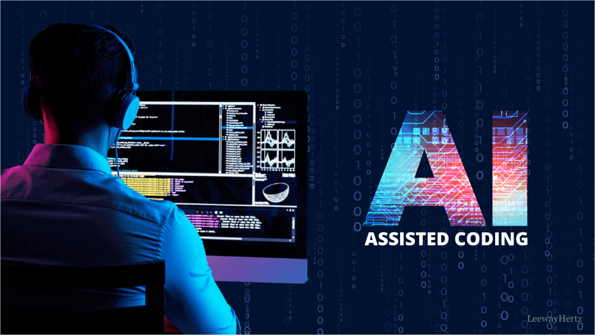

Hi, I'm Harikrishnan. Welcome to my corner on the internet. I'm a software engineer and I enjoy programming,
watching Arsenal play football and reading good books. I post what I find interesting to share here.
Blog Posts
Arsenal Won the Premier League after 22 Years
Published
To watch Arsenal win the Premier League for the first time ever since I have been a fan of that club was
an
amazing moment in my life. I became an Arsenal fan in 2016 and exactly after 10 years Arsenal is crowned
as the
Champions of English Football once again.
How I practice programming in the age of AI
Published

Programming is an exercise for your brain and it can be fun and rewarding experience. But using AI to do
it 100%
for you can be like sitting in a self driving car. For me as a human being, it's important to live life
where you
feel in control and dictate what you produce. I like AI as it would guide me to find the right files and
sections of
code in large code base when there is a bug I need to resolve quickly. But I read what it produces and
dictate if I should
approve the changes or not. In my personal life I prefer coding myself as it's a fun experience and you
also get to learn.
Should You Read Fantasy Books
Published
I recently heard some CEO of an AI company saying(I'm paraphrasing) you shuoldn't waste time reading
fiction but instead
you should be learning math, physics or programming that add value to the progress of the scientific
world. That's a horrible
take on that subject in my opinion. That comment is also a reflection of the world we are in right now,
which is all about
optimizing and productive that almost makes life mundane and without any human ingenuity or creativity.
Reading fiction can be
highly entertaining and a pleasureable activity for the human mind.It is a biprodcut of someone spending
time to let his/her
thoughts run wild and create a fantasy world and would make us all dream or escape into such a world
that grants somany benefits to the reader.
Spend time to self reflect
Published
I do use my phone a lot may be a lot more than somany people. But I believe that you need to spend some
amout of
time to do a grounding. Grounding means you allow your mind to self reflect your life/day or actions on
the basis of
your experience of your reality.
Being Careful While Driving
Published
I have been very careful while driving in last few weeks. Especially when I take a corner. Most time I have experienced
that many drivers take a corner through the opposite lane and you almost have to stop your car to avoid a collision.
They don't horn and would take the corner thinking no vehichle is coming from the opposite direction. I wonder whey do
they all would be in an accident so they would learn a lesson. I'm sorry. That's just my thought when I see someone doing that.